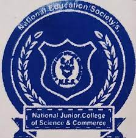
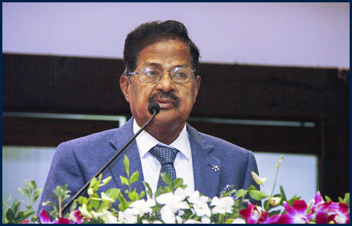
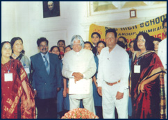
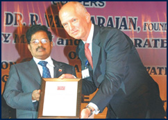
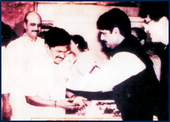
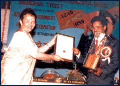
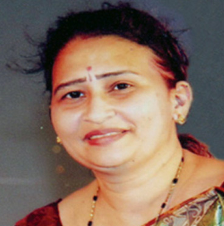

HOME | |
ABOUT US | |
COURSES | |
ADMISSION | |
GALLERY | |
CONTACT US |
 |
Who We AreNES Junior College is born out of the noble visions of its promoters for creating a new generation with high degree of basic values. The aim of the college is to impart academic excellence and to inculcate character and moral values in the students to become all-round achievers and leaders for tomorrow’s world by attaining world- career. It readily identifies itself with progressive educational movements, encourages in constructive programmes and participates in gainful purposes – all of which contribute to the cause of quality education at large. Adult education, rural welfare work, anti-drug drives, blood donation, welfare activities for physically handicapped, cancer detection camps etc. are some of the activities which our NES is dedicated to. Today, NES Institutions impart quality education with immaculate discipline to above 28,500 boys and girls from pre-school to post graduation levels, including professional educations of different values. |
 |
What We DoNational Education Society, has however, not rested on its oars. It has dedicated and rededicated itself to usher in a new era of progress and achievement. In the post jubilee years the society proposed to expand, innovate and diversify in order to face the emerging challenges of the world and tasks in the educational realm. It has been following the great thrust on Information Technology, developing the students more on I.T. base and encouraging more and more vocational / professional education so as to be able to compete with the world standard. Every soul in our institution is inspired and equipped to impart and imbibe education, utilizing the latest of technology. Hence the college has introduced Computer Aided Teaching at class room level to make the teaching process more interesting, effective and satisfying and introduced vocational courses in the college and number of profession oriented courses under its management’s fold. |
|  |  |  |  |
Dr. R. VaradarajanFounder-President NES-SVB Group of Institutions |
President MessageMy Dear Students,
The NES-SVB group not only offers programmes from Kg. to the Doctorate level, but also
presents unique
We are working on a war footing to ensure that we are ready to face the future with
confidence and dignity. Our |
Director Message
Dear students, Qualifications
|
Dr. V. BalasubramanianDirector NES-SVB Group of Institutions. |
Mrs. Megha GhadgePrincipal NES High School and Junior College |
Principal's MessageDear Students,
I now implore that my talented students will equally manifest their worth in the skill of
communication, the
This edition makes a point to be mouthpiece as it carries out a clear picture, which
reflects the various activities |